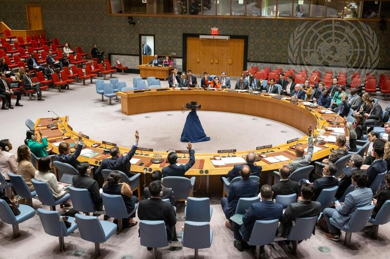
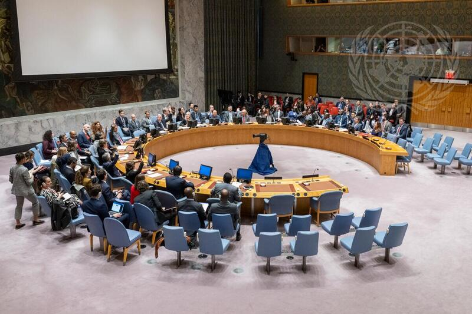
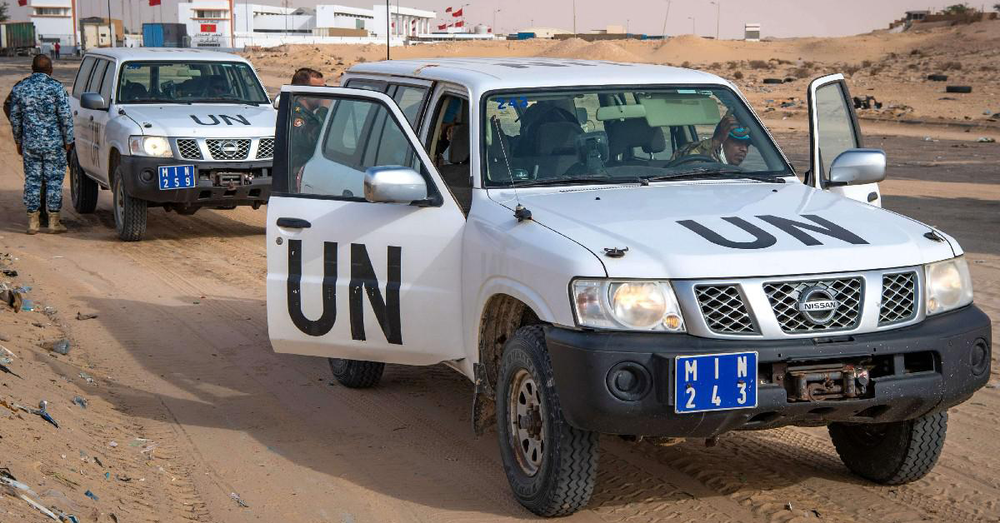
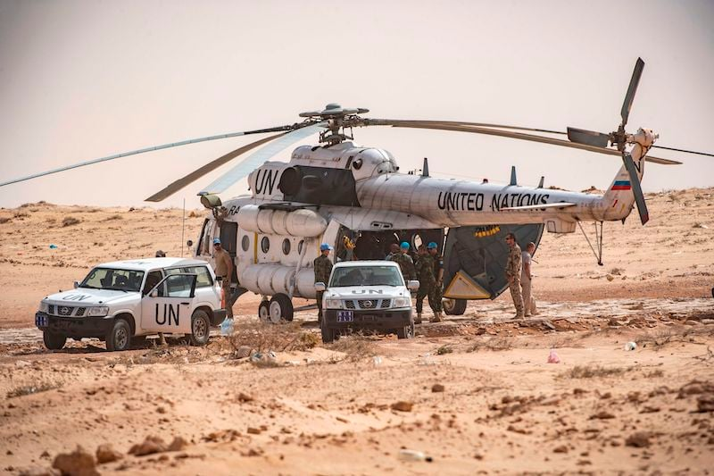
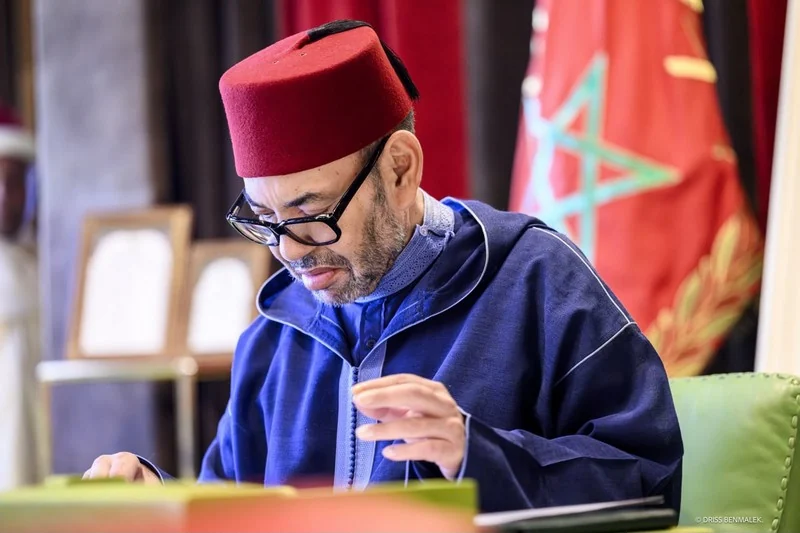
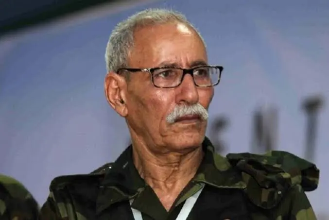
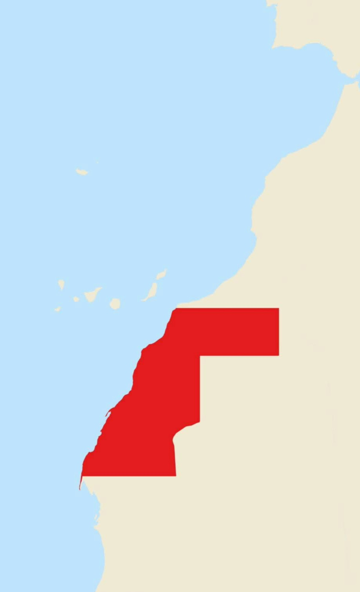

فيتو روسي، ولاية منتهية، وتصفية بدأت

امتنعت الصين وباكستان والصومال عن التصويت على المشروع الأمريكي.
موسكو: لا يمكن لمجلس الأمن أن يحسم مسبقاً مسائل السيادة. وقدّمت بديلاً يمدّد البعثة بمهامها كما هي.

ودعوة الأطراف إلى ضبط النفس والتعاون
الأمم المتحدة: انتهاء البعثة لا يلغي حق تقرير المصير، والعمل يتواصل عبر المبعوث الشخصي ستافان دي ميستورا.



صفحة البعثة طُويت، ومتمسك بوقف إطلاق النار
شكرت موسكو، وتحمّل واشنطن نهاية البعثة
تأسف لعدم التجديد وتنتقد انحياز المشروع
لا حسم مسبقاً لمسائل السيادة

كانت البعثة آخر آلية مراقبة دولية في الإقليم
منع تغيير مهمة البعثة، لكنه لم يُبقِها
الرباط ترى القرار 2797 مرجعاً قائماً وتطالب بسحب الملف من جدول المجلس، وهي قراءة لم يحسمها المجلس
لم يُحدَّد أي موعد لتصويت جديد
الأمم المتحدة تعوّل على مبعوثها الشخصي
دون مراقبين دوليين على الأرض
أسئلة مطروحة وليست توقعات.